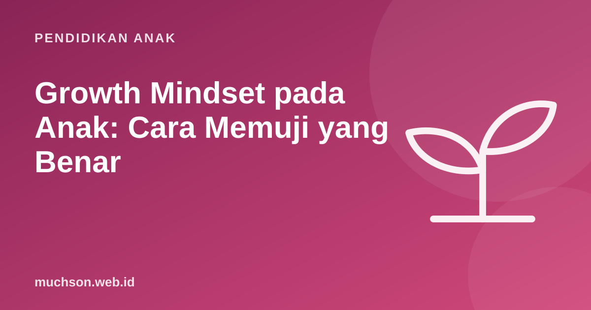

Beranda › Artikel › Pendidikan Anak
Pendidikan AnakGrowth Mindset pada Anak: Cara Memuji yang Benar
"Wah, kamu pintar sekali!" terdengar seperti pujian yang sempurna. Penelitian psikologi menunjukkan pujian seperti ini, bila terlalu sering, justru bisa membuat sebagian anak takut mencoba hal sulit. Artikel ini menjelaskan konsep growth mindset, apa kata riset (termasuk batas-batasnya), dan cara memuji yang lebih membantu.

Dua cara memandang kemampuan
Psikolog Carol Dweck dari Stanford University membedakan dua pola pandang. Dengan fixed mindset (pola pikir tetap), seseorang menganggap kecerdasan sebagai bawaan yang tidak berubah: "aku memang tidak bisa matematika". Dengan growth mindset (pola pikir bertumbuh), kemampuan dipandang bisa berkembang lewat usaha, strategi yang tepat, dan bantuan: "aku belum bisa matematika".
Eksperimen pujian yang terkenal
Dalam studi Mueller dan Dweck (1998), anak-anak mengerjakan soal, lalu dipuji dengan dua cara berbeda: "kamu pasti pintar" atau "kamu pasti berusaha keras". Setelah itu mereka diberi soal yang sangat sulit sampai gagal. Anak yang dipuji karena kepintarannya cenderung kehilangan minat, menilai diri lebih buruk, dan pada soal berikutnya kinerjanya menurun. Anak yang dipuji karena usahanya lebih tekun dan lebih memilih tugas yang menantang.
Logikanya: kalau aku dipuji karena pintar, maka gagal berarti aku tidak pintar. Lebih aman tidak mencoba yang sulit. Kalau aku dipuji karena usaha, gagal hanya berarti aku perlu berusaha atau mencoba cara lain.
Yang dikatakan riset terbaru (dengan jujur)
Growth mindset sempat dipromosikan seolah obat ajaib pendidikan. Riset yang lebih besar memberi gambaran yang lebih seimbang:
- Sisk dan rekan (2018), dalam dua meta-analisis di Psychological Science, menemukan hubungan mindset dengan prestasi akademik secara umum lemah, dan efek program intervensi mindset rata-rata kecil.
- Yeager dan rekan (2019), dalam studi nasional di Amerika Serikat yang dimuat di Nature, menemukan intervensi singkat growth mindset meningkatkan nilai terutama pada siswa berprestasi rendah, dan efeknya lebih kuat di sekolah yang lingkungannya mendukung.
Growth mindset bukan mantra yang cukup diucapkan. Yang berdampak adalah lingkungan sehari-hari: pujian yang tepat, tantangan yang sesuai, kesempatan memperbaiki, dan orang dewasa yang memperlakukan kesalahan sebagai bagian dari belajar.
Cara memuji yang lebih membantu
Pujian proses menyebut apa yang anak lakukan: usaha, strategi, ketekunan, perbaikan. Tetapi hati-hati dengan "growth mindset palsu", yaitu memuji usaha padahal anak tidak berkembang. Kalau usaha tidak membuahkan hasil, bantu anak mencari strategi lain.
| Daripada | Coba katakan |
|---|---|
| "Kamu pintar!" | "Kamu mencoba beberapa cara sampai ketemu. Itu strategi yang bagus." |
| "Kamu berbakat menggambar." | "Lihat detail di sayap kupu-kupunya. Kamu teliti sekali." |
| "Ini gampang kok." | "Ini memang menantang. Bagian mana yang mau kita coba dulu?" |
| "Tidak apa-apa, kamu memang tidak bakat matematika." | "Kamu belum bisa bagian ini. Ayo cari cara yang lain." |
| "Bagus, nilaimu 100!" | "Kamu rajin mengulang latihan minggu ini, dan hasilnya terlihat." |
| "Kamu sudah berusaha" (padahal tidak ada kemajuan) | "Cara ini belum berhasil. Mau coba strategi lain, atau minta petunjuk?" |
Kekuatan kata "belum"
Satu kata kecil bisa mengubah cara anak memandang dirinya. "Aku tidak bisa berenang" terdengar final. "Aku belum bisa berenang" membuka kemungkinan. Biasakan menambahkan "belum" setiap kali anak berkata tidak bisa. Lama-lama anak akan mengucapkannya sendiri.
Menciptakan lingkungan growth mindset di rumah
Kegiatan yang memberi kesempatan gagal lalu memperbaiki dalam waktu singkat sangat cocok untuk melatih pola pikir ini. Coding salah satunya: program salah, anak mencari bug, mencoba lagi, berhasil. Siklus ini terjadi puluhan kali dalam satu pelajaran. Lihat sendiri bagaimana anak menghadapinya di pelajaran gratis PixelKode.
Tanya jawab
Apa itu growth mindset?
Apakah salah memuji anak pintar?
Apakah growth mindset terbukti secara ilmiah?
Bagaimana menanggapi anak yang berkata "aku bodoh"?
Sumber dan bacaan lanjut
- Mueller, C. M., & Dweck, C. S. (1998). Praise for intelligence can undermine children's motivation and performance
- Sisk, V. F. dkk. (2018). To what extent and under which circumstances are growth mind-sets important to academic achievement? Psychological Science
- Yeager, D. S. dkk. (2019). A national experiment reveals where a growth mindset improves achievement. Nature